Is that a Nile tilapia, or something else?
Upload a photo of a freshwater fish and get its most likely species in a couple of seconds. The analysis runs inside your browser, so your picture never leaves your device.
- 6 species recognised
- 0 photos uploaded to a server
- Free to use, no sign-up

Identify your fish
Choose a clear, side-on photo. We will compare it against the six species this model was trained on.
Your photo
Loading modelDrop a fish photo here
or pick one from your device. You can also paste an image with Ctrl + V.
For the best result
- Show the whole fish from the side, head to tail.
- Use daylight and a plain background if you can.
- Keep one fish in the frame and avoid heavy filters.
Result

Nothing to identify yet
Add a photo on the left and the most likely species will show up here, along with how sure the model is.
Most likely species
All six species
How to confirm it yourself
This model only knows six species. A fish outside this list will still be matched to the closest of the six, so treat the result as a helpful guess, not a final identification.
The six species it knows
Four tilapia and two common look-alikes found in the same waters. Select a card to see what sets each one apart.
How it works
Three steps, all of them happening on your own device.
-
1
You add a photo
Pick an image or take one with your camera. It is only read by this page and is never sent anywhere.
-
2
The page prepares it
The image is resized to 224 by 224 pixels and its colour values are converted into the numbers the model expects.
-
3
The model scores six species
A lightweight neural network (MobileNetV2) gives each species a probability. The highest one is your result.
About the model
FinID is a deep learning capstone project. A convolutional neural network was trained on openly licensed photographs of six freshwater fish and exported to ONNX, a format that runs directly in a web browser.
Fish can look very alike, especially among tilapia, so the confidence bar matters as much as the name. When the model is unsure, it says so.
- Architecture
- MobileNetV2
- Input size
- 224 × 224 px
- Species
- 6
- Training images
- Test accuracy
- Runs on
- Your device, offline after loading